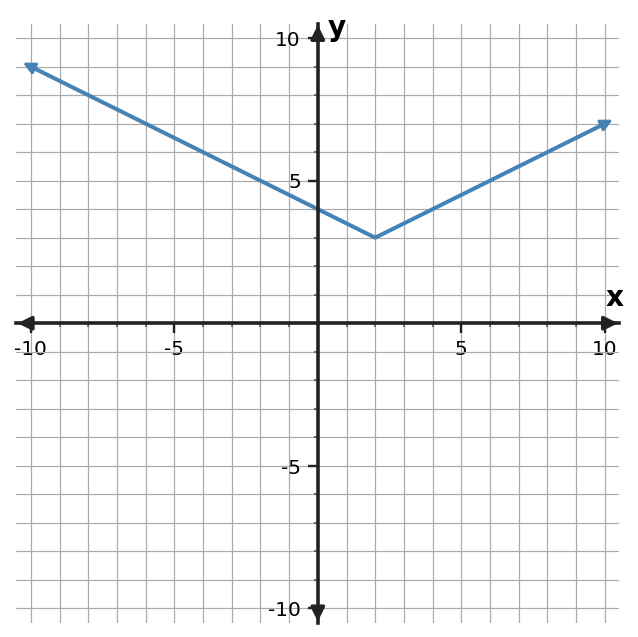
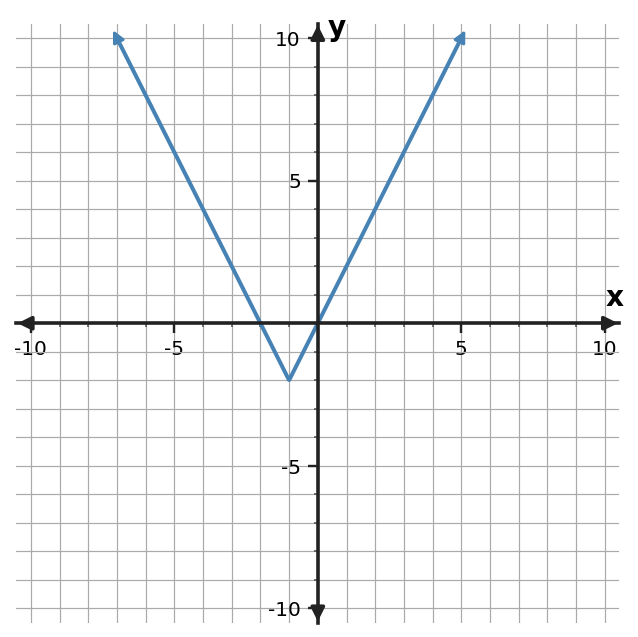

1
Classify the function family supported by the table. Give two pieces of evidence.
| $x$ | $y$ |
|---|---|
| $0$ | $2$ |
| $1$ | $6$ |
| $2$ | $18$ |
| $3$ | $54$ |
Show enough work and reasoning to make your thinking visible. Interpret answers in context when appropriate.
Classify the function family supported by the table. Give two pieces of evidence.
| $x$ | $y$ |
|---|---|
| $0$ | $2$ |
| $1$ | $6$ |
| $2$ | $18$ |
| $3$ | $54$ |
Describe the transformations from $y=x^2$ to $y=-2(x-1)^2+1$. Then map the parent point $(1,1)$ to its new location.
A rectangle has side lengths $x+4$ and $x-2$. Write the area as a polynomial and explain which operation produces the result.
For $f(x)=(x+2)(x-4)$, state the x-intercepts, direction of opening, and axis of symmetry. Explain which features came directly from structure and which required one extra step.
Identify the function family shown and justify using a graph feature.

The table pairs points on the parent $y=x^2$ with their images on a transformed graph. Determine the coordinate transformation rule, write the transformed equation, and explain how one row verifies your rule.
| Parent point | Image point |
|---|---|
| $(-2,4)$ | $(0,3)$ |
| $(0,0)$ | $(2,1)$ |
| $(2,4)$ | $(4,3)$ |
A composite display has a main rectangle with side lengths $x+3$ and $x+2$, an attached panel with area $2x^2-x+4$, and a cutout with area $x^2+x+2$. Find the total remaining area as a polynomial. Expand the main rectangle before combining the three areas.
Rewrite $f(x)=x^2-6x+5$ in vertex form. Then use that form to state the vertex, axis of symmetry, and the minimum value of $f$.
Show enough work and reasoning to make your thinking visible. Interpret answers in context when appropriate.
A rectangle has side lengths $x+4$ and $x-3$. Write the area as a polynomial and explain which operation produces the result.
The table pairs points on the parent $y=x^2$ with their images on a transformed graph. Determine the coordinate transformation rule, write the transformed equation, and explain how one row verifies your rule.
| Parent point | Image point |
|---|---|
| $(-2,4)$ | $(-3,0)$ |
| $(0,0)$ | $(-1,-2)$ |
| $(2,4)$ | $(1,0)$ |
Classify the function family supported by the table. Give two pieces of evidence.
| $x$ | $y$ |
|---|---|
| $0$ | $5$ |
| $1$ | $10$ |
| $2$ | $20$ |
| $3$ | $40$ |
Rewrite $f(x)=x^2+4x-5$ in vertex form. Then use that form to state the vertex, axis of symmetry, and the minimum value of $f$.
Describe the transformations from $y=x^2$ to $y=-2(x+1)^2-1$. Then map the parent point $(1,1)$ to its new location.
A composite display has a main rectangle with side lengths $x+4$ and $x+1$, an attached panel with area $x^2+3x+5$, and a cutout with area $x^2+x+1$. Find the total remaining area as a polynomial. Expand the main rectangle before combining the three areas.
For $f(x)=(x+3)(x-6)$, state the x-intercepts, direction of opening, and axis of symmetry. Explain which features came directly from structure and which required one extra step.
Identify the function family shown and justify using a graph feature.

Show enough work and reasoning to make your thinking visible. Interpret answers in context when appropriate.
Identify the function family shown and justify using a graph feature.

A rectangle has side lengths $x+4$ and $x-4$. Write the area as a polynomial and explain which operation produces the result.
Rewrite $f(x)=x^2-8x+7$ in vertex form. Then use that form to state the vertex, axis of symmetry, and the minimum value of $f$.
Describe the transformations from $y=x^2$ to $y=-2(x-1)^2$. Then map the parent point $(1,1)$ to its new location.
A composite display has a main rectangle with side lengths $x+5$ and $x+2$, an attached panel with area $2x^2+2x+3$, and a cutout with area $x^2+4x+1$. Find the total remaining area as a polynomial. Expand the main rectangle before combining the three areas.
Classify the function family supported by the table. Give two pieces of evidence.
| $x$ | $y$ |
|---|---|
| $0$ | $3$ |
| $1$ | $12$ |
| $2$ | $48$ |
| $3$ | $192$ |
The table pairs points on the parent $y=x^2$ with their images on a transformed graph. Determine the coordinate transformation rule, write the transformed equation, and explain how one row verifies your rule.
| Parent point | Image point |
|---|---|
| $(-2,4)$ | $(1,1)$ |
| $(0,0)$ | $(3,-1)$ |
| $(2,4)$ | $(5,1)$ |
For $f(x)=(x+1)(x-4)$, state the x-intercepts, direction of opening, and axis of symmetry. Explain which features came directly from structure and which required one extra step.
Show enough work and reasoning to make your thinking visible. Interpret answers in context when appropriate.
Describe the transformations from $y=x^2$ to $y=-2(x+1)^2+1$. Then map the parent point $(1,1)$ to its new location.
A composite display has a main rectangle with side lengths $x+2$ and $x+6$, an attached panel with area $x^2+4x+2$, and a cutout with area $x^2+2x+5$. Find the total remaining area as a polynomial. Expand the main rectangle before combining the three areas.
For $f(x)=(x+2)(x-6)$, state the x-intercepts, direction of opening, and axis of symmetry. Explain which features came directly from structure and which required one extra step.
Identify the function family shown and justify using a graph feature.

Rewrite $f(x)=x^2+6x+5$ in vertex form. Then use that form to state the vertex, axis of symmetry, and the minimum value of $f$.
A rectangle has side lengths $x+5$ and $x-2$. Write the area as a polynomial and explain which operation produces the result.
Classify the function family supported by the table. Give two pieces of evidence.
| $x$ | $y$ |
|---|---|
| $0$ | $4$ |
| $1$ | $12$ |
| $2$ | $36$ |
| $3$ | $108$ |
The table pairs points on the parent $y=x^2$ with their images on a transformed graph. Determine the coordinate transformation rule, write the transformed equation, and explain how one row verifies your rule.
| Parent point | Image point |
|---|---|
| $(-2,4)$ | $(-4,4)$ |
| $(0,0)$ | $(-2,2)$ |
| $(2,4)$ | $(0,4)$ |
Show enough work and reasoning to make your thinking visible. Interpret answers in context when appropriate.
The table shows key points from $y=x^2$. Apply the rule $(x,y)\to(x+3,-\frac12y+4)$ to create the transformed points, then describe the transformations.
| $x$ | $y$ |
|---|---|
| $-2$ | $4$ |
| $0$ | $0$ |
| $2$ | $4$ |
A student claims $y=(x-3)^2-8$ has an x-intercept at $(3,0)$ because 3 appears in the equation. Critique the claim and identify the feature that 3 actually reveals.
A classmate says the data might be absolute value because the outputs decrease and then increase. Decide whether a quadratic or absolute-value model is better, write an equation that matches the table, and cite the strongest table evidence.
| $x$ | $y$ |
|---|---|
| $-2$ | $5$ |
| $-1$ | $2$ |
| $0$ | $1$ |
| $1$ | $2$ |
| $2$ | $5$ |
Simplify $(4x^2-3x+7)-(x^2+5x-2)+(2x^2-x+1)$. Show how like terms are organized.
Compare $f(x)=(x+2)(x-6)$ and $g(x)=(x-2)^2-16$. Show that they represent the same quadratic, then state the zeros, axis of symmetry, and direction of opening. Explain which form reveals each feature most directly.
Write an equation for the absolute-value parent $y=|x|$ after a reflection across the x-axis, vertical stretch by 2, shift right 4, and shift down 1. Then state the new vertex.
Complete the area model for $(2x-3)(x+5)$, then combine the four partial products to write the product polynomial.
| $x$ | $5$ | |
|---|---|---|
| $2x$ | ? | ? |
| $-3$ | ? | ? |
For $f(x)=|x-3|+2$, complete the table for the given inputs. Then identify the function family and name the evidence from the equation or table that is most diagnostic.
| $x$ | $f(x)$ |
|---|---|
| $2$ | ? |
| $3$ | ? |
| $4$ | ? |
Show enough work and reasoning to make your thinking visible. Interpret answers in context when appropriate.
Two equivalent area expressions are proposed for a rectangle: $(x+4)(x+7)$ and $x^2+11x+28$. Verify equivalence and explain one reason each form might be useful.
A situation grows by 6 units each hour from an initial value of 12. Choose the familiar function family, write a model, and name the table pattern you would expect.
Use the graph to write a transformation description relative to $y=x^2$ and a matching vertex-form equation.

Use the table to identify the vertex, axis of symmetry, zeros, and direction of opening. Then write a quadratic equation consistent with the data.
| $x$ | $y$ |
|---|---|
| $-2$ | $0$ |
| $-1$ | $-3$ |
| $0$ | $-4$ |
| $1$ | $-3$ |
| $2$ | $0$ |
A graph is described only as increasing and curved. The table below comes from the same relationship. Which evidence is stronger for identifying the function family? Identify the family and explain.
| $x$ | $y$ |
|---|---|
| $0$ | $8$ |
| $1$ | $12$ |
| $2$ | $18$ |
| $3$ | $27$ |
Simplify $(x+3)(x-2)+(x^2-4x+5)-(x^2+2x-3)$. Your expanded product is needed before you can combine the expressions.
For $f(x)=x^2-6x+5$, rewrite the expression in vertex form and factored form. Use the two forms to state the vertex and $x$-intercepts, then explain which form reveals each feature most directly.
Design an equation from the parent $y=\sqrt{x}$ with endpoint $(2,-1)$, reflected across the $x$-axis, and vertically stretched by a factor of $3$. State the transformations and give the image of the parent point $(1,1)$.